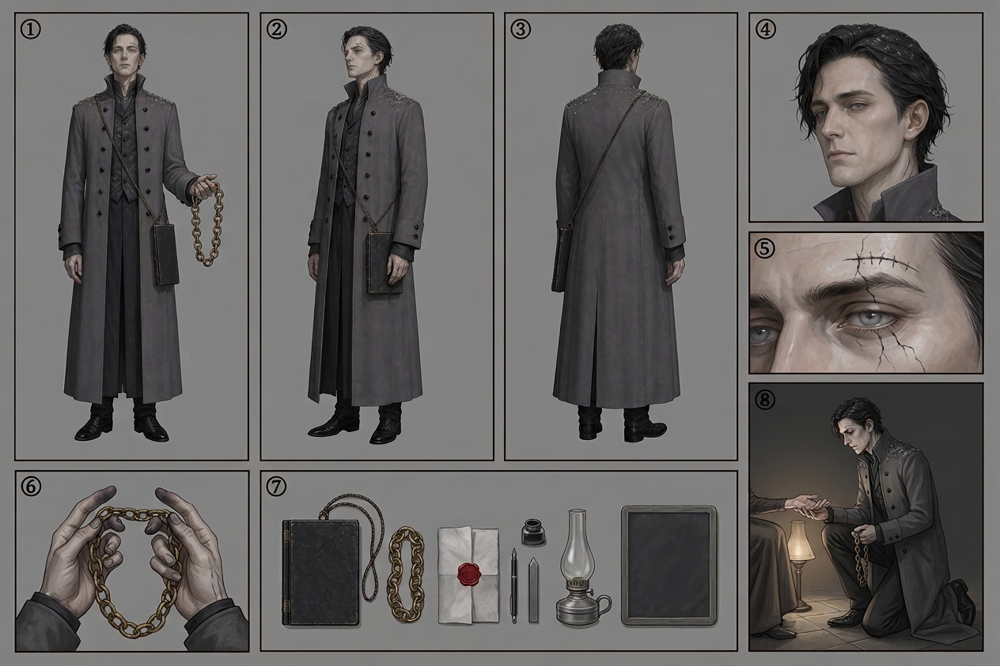

REKHAK VAHNI — model sheet
Chapter 001 · first appearance. The drawing reference for every page this character is on — the eight required panels — front · side · back · face · detail · hands · kit · action, in the house panel order, per the character art spec.

🔍 click to zoom
1front2side3back4face5detail (the sight-mark above the left brow, neck-lines at the jaw)6hands (running the counting-chain link by link)7kit (level-slate, counting-chain, the folded page under crimson wax, pen, inkpot, grey wax, lamp, blank slate)8action (kneeling — the palm read at the lamp, chain stopped)
Drawing brief
- Build: tall, thin, slightly stooped at the shoulders — a man who has spent his life bending over ledgers. Never broad. Never imposing by size; imposing by accuracy.
- Face: narrow, clean-shaven, pale eyes (wash them out — pale grey-blue, almost colourless). Faint dark capillaries of debt-line at the temples.
- The Sight-mark: a fine dark suture-like mark on the bone above the left brow. When he spends it, a hairline crack of new dark marks spreads downward under the eye — always in-panel (canon rule).
- Debt: Deep. Thin dark lines climb his neck to the jaw and disappear into his collar. Do not draw him Clear. Do not draw him Terminal (no lines at the eyes yet — that is his future).
- Clothes: ash-grey Ash Council greatcoat, high collar, black basalt buttons in a double row. Under it, a slate-coloured clerk's waistcoat and cuffs that are ink-stained. No armour. No weapon.
- Props (all three must be present whenever he is on panel):
- Ledger-slate — a hinged black stone tablet on a cord at his hip. Pages of stamped record.
- Counting-chain — a chain of knotted brass rings he runs through his fingers when he reads. The basin counts with thread; the Council counts with metal.
- The crimson-sealed page — one folded page in his ledger sealed with crimson wax. Never explained on panel, never opened in Chapter 1. (Off-Sector buyer. Do not name it.)
- Ash: it settles on his shoulders and he does not brush it off. An up-terrace man who lets the basin's ash sit on him — that is a character note, not an oversight.
- Silhouette test: tall thin coat + hanging ledger-slate + the counting-chain held out at hip height.
Rule: Rekhak is drawn clean and symmetrical where the basin is crooked. He is the first person in the series whose clothes have no mends in them. That is what makes him frightening.
Full written sheet, canon rules and card-game line: Rekhak Vahni